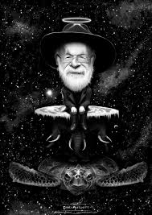

Biografía
Autor británico de excepcional imaginación, Terry (Terence David John) Pratchett nació el 28 de abril de 1948 en Beaconsfield, Bucks (Inglaterra).
Caracterizado por su mezcla entre fantasía desbordante y humor paródico, su inicio en la literatura como escritor se retrotrae a su niñez cuando publicó
“The Hades Business”, relato corto aparecido en la revista del colegio que Pratchett redactó cuando solamente contaba trece años de edad.
Este texto apareció posteriormente en la revista “Science Fantasy”.
Más adelante publicó su segundo relato corto,"Night Dweller".
A mediados de los 60 y ,tras abandonar los estudios, comenzó a trabajar como periodista
en el "Bucks Free Press"
Fue mientras trabajaba ahí cuando publicó su primera novela:"The carpet people" en 1971.
Sin embargo no será hasta los 80 que Pratchett sea un autor de masas, por esa época había abandonado su trabajo
en la Central Electricity Board(donde se encargaba de los comunicados oficiales para dedicarse de lleno a la escritura.
De corte fantástico, sus textos se dotan de un agudo humorismo con enfoque paródico en un mundo plano que viaja por el espacio ubicado encima del lomo de cuatro elefantes,
quienes a su vez descansan en el caparazón de una tortuga estelar llamada la Gran A’Tuin.
Además de sus más de 40 títulos ambientados en el mundodisco, pratchett escribió muchas novelas de tipos muy variados, entre ellas se encuentran;
La novela "buenos presagios" escrita junto a Neil gaiman y actualmente siendo adaptada a la pequeña pantalla.
La trilogía de ciencia ficción "la tierra larga" escrita junto a Stephen Baxter y una seríe de libros de divulgación científica en clave de humor:
"La ciencia de mundobola".
Además en 2009 fue nombrado caballero por la reina de Inglaterra y gastó gran parte de la compensación económica en forjarse una espada hecha con
acero de meteorito pues:
"Un caballero que se precie debe tener una espada hecha de materiales raros"
En 2017 Terry Pratchett anunció que sufria una variedad de alzheimer especialmente prematura y agresiva, pese a ello continuó escribiendo aún cuando no podía apenas moverse y tenía que limitarse a dictar.
Después de una larga convalecencía murió el 12 de marzo de 2015.